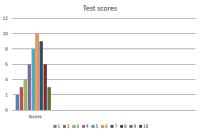

Testing terminology

For the full list, use this link: Glossaries Index.
Testing and assessment is an area of English Language (and other
Languages) Teaching which is particularly rich in, some might say
infested with, terminology.
This short guide is intended to
help you see what it all means.
| achievement tests | tests directly related to a language course designed to find out how well the targets of the course have been attained. Cf. proficiency tests and summative testing. |
| alternative answer item | a test which has only two possible answers to choose from. |
| analytic scoring | scoring a mark for each component of a task. For example, use of vocabulary, orthography, use of conjunctions, correct intonation patterns, effect on the reader etc. |
| aptitude testing | assessing not how much people know and can do but how well they will be able to acquire the targets. |
| authenticity | a measure of how close to real-life language use a test item is or requires from the learner. |
| backwash | the effect on the learning / teaching process that a particular form of testing has. For example, teaching to examinations and including formalised practice examination tasks in the teaching. |
| barrier test | a test designed to filter candidates for certain course programmes on the basis of their current ability. |
| benchmarking | using a selection of test scripts from test takers to standardise the marking when a range of markers is involved. Ideally, benchmark scripts should represent the whole range of ability that one is trying to measure. |
| cloze tests | conventionally, the deletion of a specific number of words from a text, e.g., every seventh word, and their replacement with gaps for the learner to fill in. The term is applied widely to any gap-fill test (q.v.). |
| communicative language testing | measuring the ability of test takers to use language rather than measuring formal structural, lexical and phonological systems. Testing performance rather than competence. |
| concurrent validity | a measure of how well a test's results will parallel the results of other tests. |
| construct validity | a measure of how precisely and accurately we can describe what it is that we are testing. |
| content validity | a measure of how well the test items are representative of what needs to be tested. |
| criterion referencing | measuring performance against a range of predetermined criteria such as structural accuracy, communicative success, range of vocabulary use etc. Cf. norm referencing. |
| definition test items | items which test the ability to recognise the definition of target words and phrases. |
| diagnostic testing | testing to discover what learners know and don't know usually in order to plan the syllabus for a course. |
| dictation | testing by getting learners to write down what they hear. |
| direct testing | testing a skill by getting the learners to use it and assessing the results. |
| discrete-point testing | a test which measures knowledge of individual language items such as lexemes, grammatical structures (tenses, conjunctions etc.) and so on. |
| distractors | the possible answers in a multiple-choice test or the wrong ones. |
| face validity | the extent that a test looks like it tests what it says it does judged from the test taker or an observer's point of view. |
| facility value | a statistical measure of how easy or difficult a test item is: the higher the value, the easier the item is judged. If 20 students take a test and 10 of them get the item right, the facility value is 0.5 but if 18 test takers get the item right, the facility value is 0.9. |
| formative testing | testing during a teaching programme to identify progress so far and to adjust the teaching programme to take account of learning (or its lack). |
| free-response task | a task in which the test taker can use any linguistic resources to achieve the result with no guidelines of structure to follow. |
| fresh start | ensuring that test items are discrete and the performance in one task will not be dependent on success in a previous task. |
| gap-fill tests | any test in which the taker is required to fill in a gap in a written or heard text. |
| guess ratio | a measure of how many test items a taker may get right simply by guessing. A four-item multiple test would imply a guess ratio of one in four but it may be more or less on a random basis. |
| histogram | a graphical representation of test
scores for analytical purposes such as:  which shows how many test takers scored what number of correct answers. |
| holistic scoring | judging on the basis of an overall impression. |
| imitation | requiring learners to repeat a sentence or clause that they hear. |
| indirect testing | attempting to test the abilities which underlie a skill such as vocabulary or grammatical knowledge underlying the ability to write accurately. |
| information transfer | test items which require the learner to transfer data from one format to another, e.g., transferring written prose to make a diagram or vice versa. |
| integrative testing | another description of discrete-point testing (q.v.). |
| interpreting test | an oral test in which the learner must translate utterances in the learner's language from one speaker to a listener in the target language. |
| interview | an oral test conducted in the format of an interview. |
| mean | the average score. The mean of 5, 12, 16 and 21 is, e.g., 13.5. |
| moderation | the process of reviewing and amending a test item to make it more reliable by discussion, usually as a team. |
| multiple-choice | a test item in which the learner must choose from a range of possible answers (usually more than two). |
| norm referencing | grading test outcomes not against a set of criteria but in relation to the learner's ranking in comparison to other learners. |
| objectives | what a test is trying to achieve. |
| objective testing | making testing and marking as free from marker judgements as possible. |
| paraphrase items | items that require learners to re-express what they hear or read in a different form, often with part of the paraphrase given. |
| placement tests | tests, usually of proficiency, designed to grade learners into appropriate groups for teaching purposes. |
| practicality | a measure of how practical a test is to administer considering, e.g., markers required, time taken, facilities needed etc. |
| predictive validity | a measure of how well we can predict the learners' actual performance from the results of a test. |
| pre-testing | trialling a test to judge its effectiveness before editing and revising. Trialling a test with native speakers should mean that they score near to or exactly 100%. If they don't, some items need revising. |
| proficiency tests | tests designed to measure a learner's current ability. Public examinations and placement tests are usually proficiency tests. |
| progress tests | a formative (q.v.) achievement test (q.v.) which aim to measure progress towards the teaching / learning targets. |
| reliability | a measure of how reliable a test is whenever it is taken, wherever and by whom. |
| rubric | the instruction to the test taker concerning the task. |
| scoring | marking. |
| short-answer items | tests that require the learner to respond with short definitions or paraphrases. |
| stem | the initial part of a multiple-choice test item which is followed by the choices. |
| structured-response task | a task in which the test taker is given a structure (such as sentence completion) for the answer. |
| subjective marking | marking which demands judgements of accuracy and success from the marker. |
| summative testing | testing at the end of a teaching programme to assess how well the targets have been acquired. |
| syllabus-content testing | achievement and progress testing of the targets of the teaching / learning programme. |
| synonym items | vocabulary test in which the learner must select a synonymous lexeme, phrase, clause or sentence. |
| true score | a theoretical measurement of a learner's score excluding any problems of reliability and guessing. |
| unique answer items | test items for which there is only one possible right answer. |
| validity | a complex measure of how far a test actually measures what it is intended to measure. |
| washback | see backwash. |
If you want to find out if you have understood all the terminology, take a test. Click here to do that.
If you would like this table as a PDF document, click here.